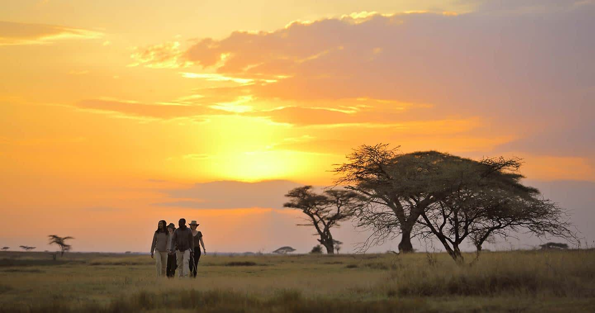
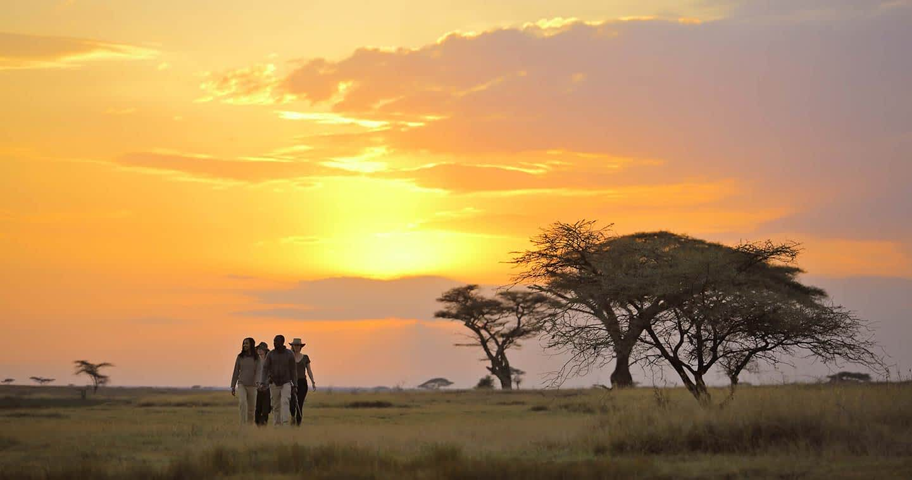

Welcome to African Wildlife
African Wildlife produces high-quality wildlife documentaries that show the real life of animals in their natural habitats. These documentaries:
Capture animal behavior, survival, and migration
Educate people about endangered species
Raise global awareness about conservation
Many of these documentaries are sponsored and streamed by platforms such as Netflix and Amazon Prime, helping the message reach a worldwide audience.
2. Conservation & Protection
The company works closely with:
Wildlife rangers
Park authorities
Local communities
Their goal is to protect animals from illegal hunting and poaching, especially during migration seasons when animals are most vulnerable.
African Wildlife believes that animals are not just resources — they are part of our identity and future.
3. Supporting Animals in Crisis.
During droughts or extreme conditions, African Wildlife provides:
Emergency feeding programs
Water access points
Veterinary assistance for injured animals.
This support helps prevent unnecessary deaths and keeps ecosystems balanced.
🐃 The Great Migration – Our Core Mission
Every year, over 1.5 to 2 million wildebeest, along with zebras and antelopes, travel more than 450,000 kilometers following rainfall and fresh grass.
This journey includes:
Dangerous river crossings filled with crocodiles.
Long dry plains with predators like lions and cheetahs
Harsh weather and limited water sources
African Wildlife follows this journey step-by-step to:
Document it accurately
Protect animals during critical moments
Educate the world about its importance
🏞️ Key Areas of Operation
African Wildlife actively works in:
Serengeti National Park (Tanzania) – Starting point of the migration
Masai Mara National Reserve (Kenya) – Famous river crossings
Simien Mountains National Park (Ethiopia)
Bale Mountains National Park (Ethiopia)
These parks represent some of Africa’s richest and most diverse ecosystems.
🤝 Community & Education
African Wildlife also invests in:
Training local guides and rangers
Educating communities about wildlife protection
Promoting eco-tourism that benefits local economies
By involving local people, the company ensures long-term protection of wildlife.
🌱 Vision & Values
Vision:
To create a future where wildlife and humans coexist peacefully.
Core Values:
Conservation
Education
Respect for nature
Sustainability
Global awareness>
The Yearly Journey of Animals
🐃 Over 1.5–2 million wildebeest move through the Serengeti–Mara ecosystem.
🌧️ They follow rainfall in search of fresh grass and water.
🐊 Dangerous river crossings with crocodiles and strong currents.
🦁 Predators like lions, cheetahs, and hyenas lie in wait.
Major Seasons
Peak Season (July–October): Best time to see river crossings.
Green Season: Calving season with lush landscapes.
Wildlife Gallery
.webp)
.jpg)

.jpg)
.jpg)
.webp) 

.webp)
.webp)
Login
Contact us
Email: africanwildlife@nature.org
For Kenya:+254812459632
For Tanzania:+256346378912
For Ethiopia:+251969816065